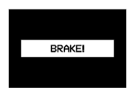
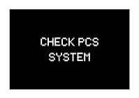

PRE-CRASH SAFETY SYSTEM > DETAILS |
| FUNCTION OF MAIN COMPONENTS |
The pre-crash safety system consists of the following parts:
| Component | Function | |
| Millimeter Wave Radar Sensor Assembly | Radiates millimeter radio wave radar forward, uses the reflected millimeter radio wave for detecting the presence of a vehicle being driven ahead, the vehicle-to-vehicle distance, and the relative speed, and transmits these pieces of information to the driving support ECU assembly. | |
| Speed Sensor | Detects the wheel speed signal and transmits the signal to the skid control ECU. | |
| Brake Actuator Assembly - Skid Control ECU |
| |
| Front Seat Outer Belt Assembly - Seat Belt Motor | Retracts the seat belt in accordance with signals received from the seat belt control ECU. | |
| Combination Meter Assembly | PCS Warning Light | Illuminates or blinks to warn the driver in accordance with signals from the seat belt control ECU and the driving support ECU assembly. |
| Multi-information Display | Displays a warning message to inform or warn the driver of the system condition in accordance with signals from the seat belt control ECU and the driving support ECU assembly. | |
| Master Warning Light | Illuminates to warn the driver in accordance with signals from the seat belt control ECU and the driving support ECU assembly. | |
| Multi Buzzer | Sounds to warn the driver in accordance with signals from the seat belt control ECU and the driving support ECU assembly when the system is malfunctioning. | |
| Steering Angle Sensor | Detects the angle and direction of steering and transmits a signal to the skid control ECU and the driving support ECU assembly. | |
| Yaw Rate Sensor | Detects the yaw rate and lateral/longitudinal deceleration of the vehicle and transmits the signal to the skid control ECU and the driving support ECU assembly. | |
| Seat Belt Control ECU | Receives a seat belt operation request signal from the driving support ECU assembly or skid control ECU and operates the seat belts. | |
| Driving Support ECU Assembly | Makes judgments on whether a collision is unavoidable based on the information received from the millimeter wave radar sensor assembly. It then outputs a seat belt operation signal and brake assist standby request signal if required. | |
| Suspension Control ECU | Sends control signals to the absorber control actuator based on the signals of the driving support ECU assembly. | |
| Pre-crash Brake Off Switch | Stops the pre-crash brake control when the switch is turned on. The PCS warning light illuminates to notify that the pre-crash brake control is off. | |
| OPERATING CONDITION |
Controls on the pre-crash safety system are performed under the following conditions:
| Control | Condition |
| Pre-crash Seat Belt (Sudden Braking Operation/Front or Rear Wheel Skid Tendency Operation) |
|
| Pre-crash Seat Belt (Pre-crash Safety Operation) |
|
| Pre-crash Brake Assist |
|
| Pre-crash Brake |
|
| AVS |
|
| SYSTEM CONTROL |
Front or Rear Wheel Skid Tendency Operation
The front or rear wheel skid tendency operation is performed as follows:
| 1) | While the vehicle is traveling at approx. 30 km/h (20 mph) or above, the skid control ECU determines the front or rear wheel skid tendency condition based on the signals from the steering angle sensor, yaw rate sensor and speed sensors. |
| 2) | The skid control ECU outputs a seat belt operation request signal to the seat belt control ECU. |
| 3) | The seat belt control ECU determines the front seat belt motor operation conditions based on this signal and the seat belt buckle switch signal. Then, it retracts the seat belts by operating the seat belt motors. |
| 4) | The seat belts return to a normal state when the relevant conditions of the vehicle have stabilized. |
Sudden Braking Operation
The sudden braking operation is performed as follows:
| 1) | While the vehicle is traveling at approx. 30 km/h (20 mph) or above, the skid control ECU can determine a sudden braking condition based on the signals from the master cylinder pressure sensor, wheel cylinder pressure sensors, stop light switch and speed sensors. |
| 2) | At this time, the skid control ECU outputs a seat belt operation request signal to the seat belt control ECU. |
| 3) | The seat belt control ECU determines the front seat belt motor operation conditions based on this signal and the seat belt buckle switch signal. Then, it retracts the seat belts by operating the seat belt motors. |
| 4) | The seat belts return to a normal state when the brake pedal is released. |
Pre-crash Safety Operation
The diagram below shows the flow of the activation of the systems during a pre-crash safety operation:
The pre-crash safety operation is performed as follows:
| 1) | The driving support ECU assembly determines that the possibility of a collision is high based on the signals received from the millimeter wave radar sensor assembly, steering angle sensor, speed sensors, and yaw rate sensor. |
| 2) | At this time, the driving support ECU assembly sends the following signals:
|
| 3) | Upon receiving this signal, the skid control ECU sets the brake assist to the standby mode, and the absorber control ECU optimizes the amount of damping of the absorber control actuators. |
| 4) | The driving support ECU assembly determines that an unavoidable collision condition exists based on the signals received from the millimeter wave radar sensor assembly, speed sensors, steering angle sensor, and yaw rate sensor. |
| 5) | At this time, the driving support ECU assembly outputs a seat belt operation request signal to the seat belt control ECU, a brake request signal to the skid control ECU. |
| 6) | The seat belt control ECU determines the front seat belt motor operation condition based on this signal and the seat belt buckle switch signal, and retracts the seat belts by operating the front seat belt motors. |
| 7) | If no collision occurs, the seat belts and the brake assist will return to their normal states. |
| CONSTRUCTION |
Millimeter Wave Radar Sensor Assembly
The millimeter wave radar sensor assembly consists of a millimeter wave radar circuit, signal processing circuit, and CPU.
For details on the millimeter wave radar sensor assembly, see the Dynamic Radar Cruise Control System.
Combination Meter Assembly
The combination meter assembly provides a master warning light, PCS warning light, multi buzzer, and multi-information display to warn and indicate in the pre-crash safety system.
If the driving support ECU assembly determines that the possibility of a collision is high, it sends a signal to the combination meter assembly. Upon receiving this signal, the combination meter assembly indicates a warning on the multi-information display. Details are indicated below:
| Multi-information Display | Details | PCS Warning Light | Skid Control Buzzer Assembly | |
|  | Displays |
| Blinks | Intermittently Sounds |
2 types of warning messages are used for the pre-crash safety system, as described below. The pre-crash safety system will not operate when these messages appear in the combination meter assembly:
| Multi-information Display | Detail | Master Warning Light | PCS Warning Light | Multi Buzzer | Diagnostic Trouble Code (DTC) |
|  | This message appears when the seat belt control ECU and the driving support ECU assembly detects a system malfunction. | Illuminates | Blinks | Sounds Once | ○ |
This message appears when the seat belt control ECU determines the following conditions:
| - | Illuminates | - | - |
| DIAGNOSIS |
Initial Check
The seat belt control ECU performs an initial check on the system for approximately 3 seconds after the engine switch has been turned on (IG).
DTC Output
If the seat belt control ECU detects a malfunction in the pre-crash safety system, it stores a 5-digit DTC in memory.
The 5-digit DTC can be read by connecting an intelligent tester II to the DLC3.